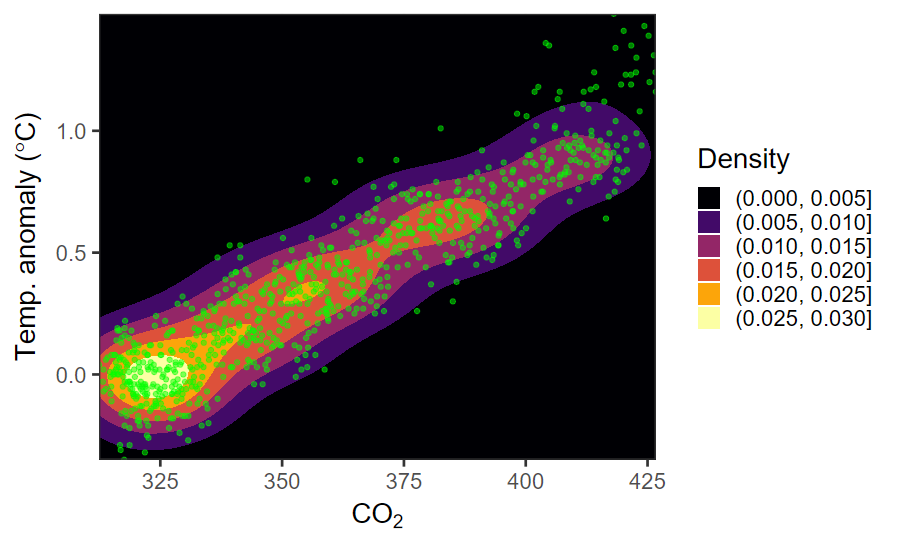
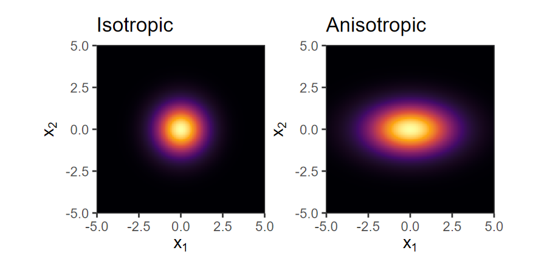
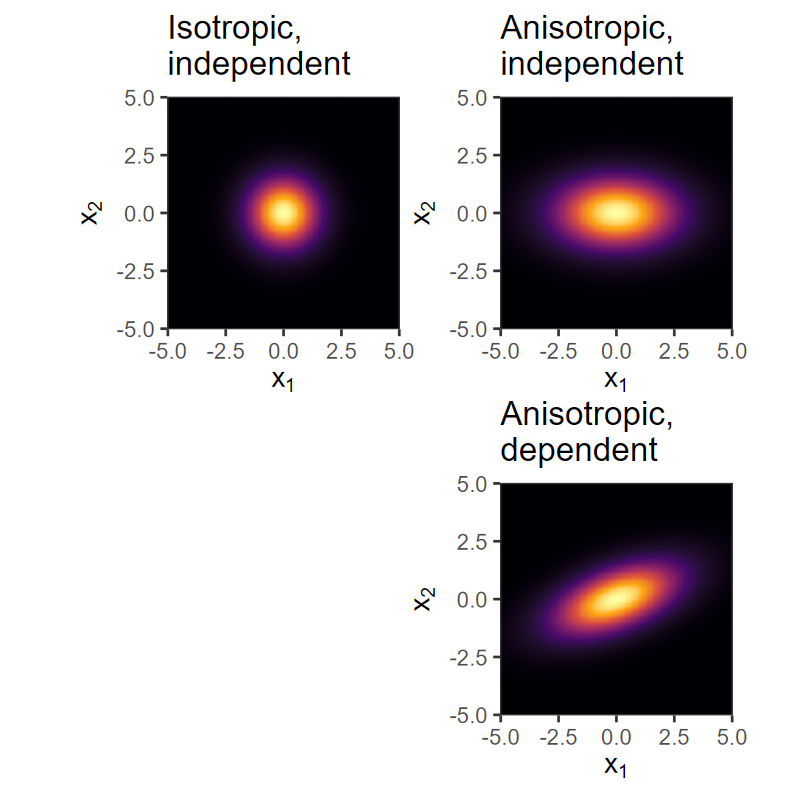
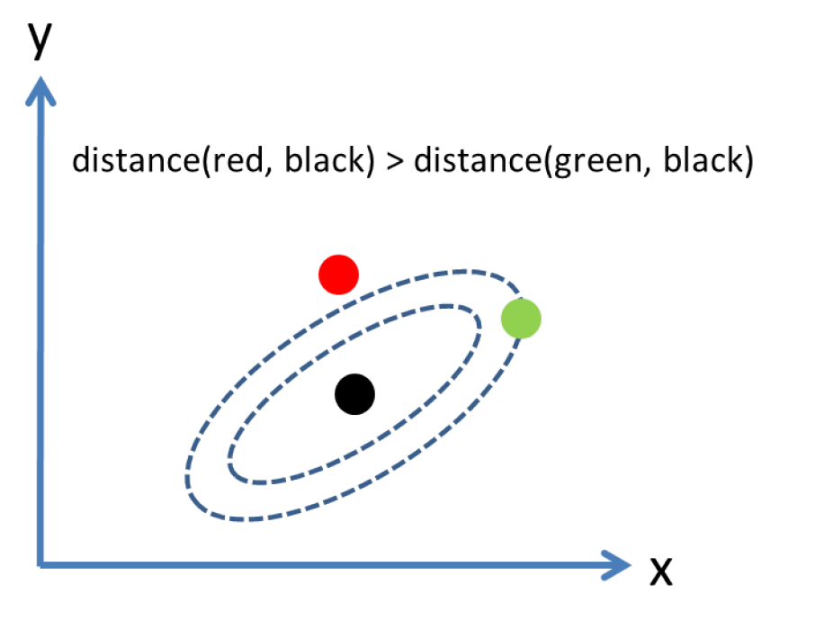
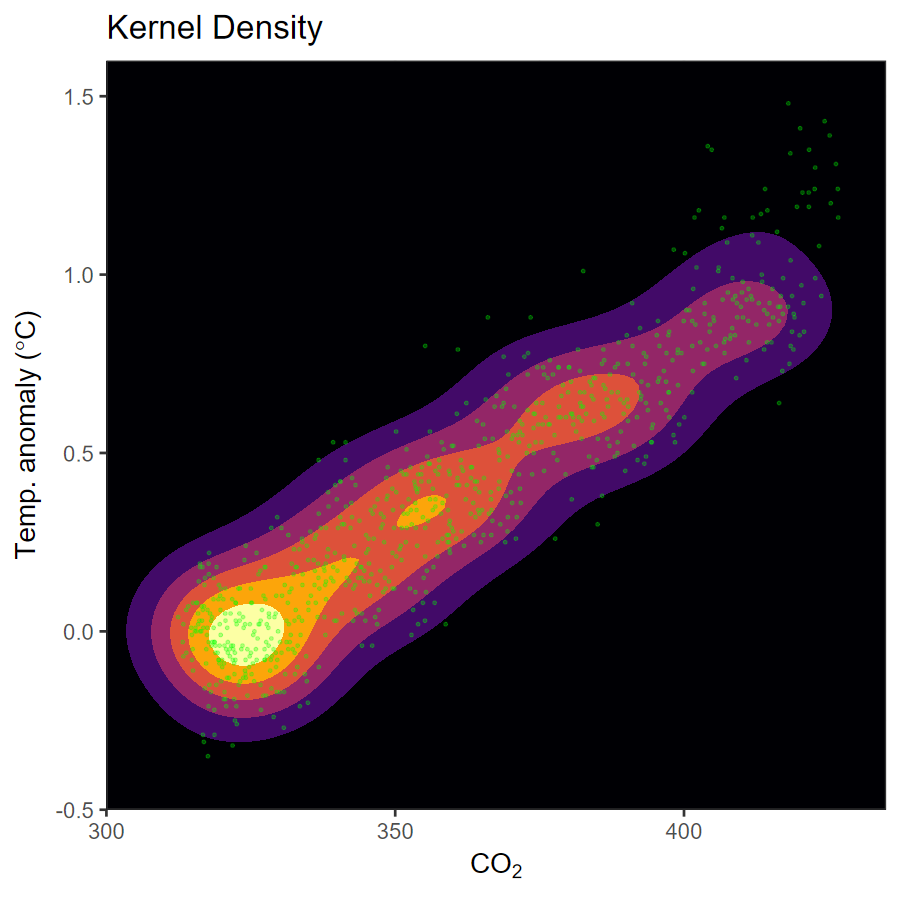
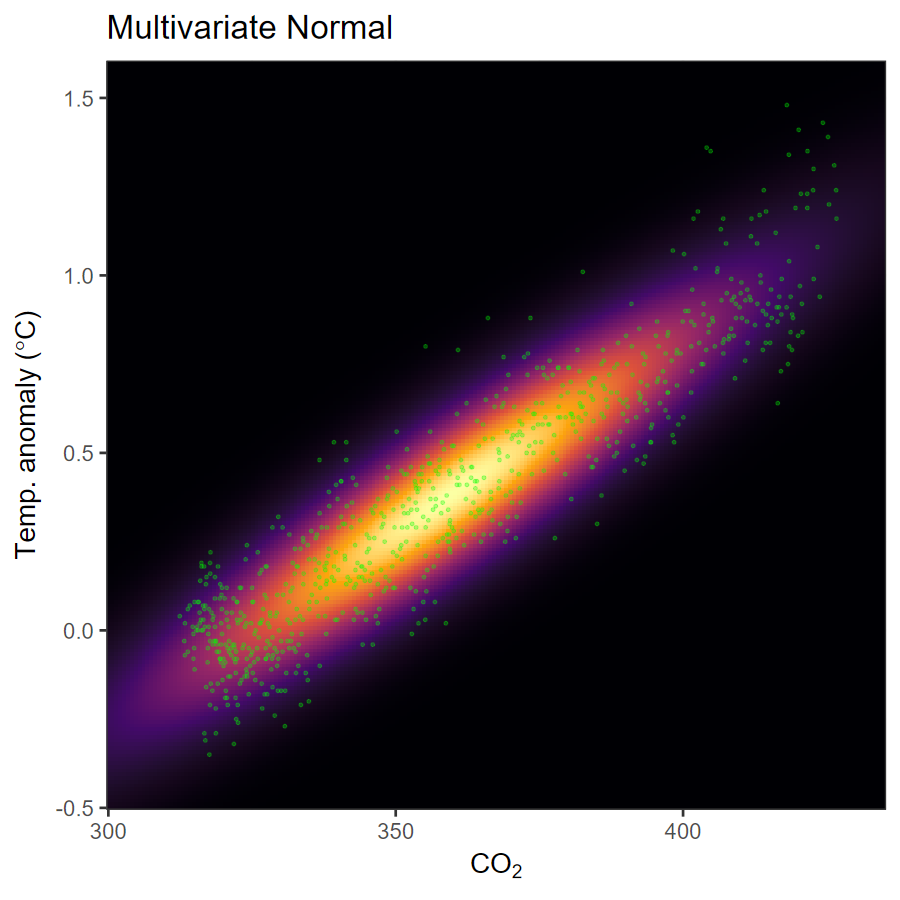

Monthly CO2 and temperature measurements
## Rows: 799
## Columns: 5
## $ year <dbl> 1958, 1958, 1958, 1958, …
## $ month <ord> mar, apr, may, jun, jul,…
## $ time <dbl> 1958.208, 1958.292, 1958…
## $ temp <dbl> 0.08, 0.01, 0.06, -0.09,…
## $ co2 <dbl> 315.71, 317.45, 317.51, …Scatter plot
Kernel Density Plots
ggplot(co2_t, aes(x = co2, y = temp)) +
geom_density_2d_filled() +
geom_point(color = "green", alpha = 0.5) +
scale_fill_viridis_d(option = "inferno", name = "Density") +
scale_x_continuous(expand = c(0,0)) +
scale_y_continuous(expand = c(0,0)) +
labs(x = expression(CO[2]),
y = expression(paste("Temp. anomaly (", degree * C, ")")))
Multivariate data: \(N\) observations of \(p\) variables
\[ X = \left[ \begin{array}{ccccc} x_{1,1} & x_{1,2} & x_{1,3} & \ldots & x_{1,p} \\ x_{2,1} & x_{2,2} & x_{2,3} & \ldots & x_{2,p} \\ \vdots & \vdots & \vdots & \ddots & \vdots\\ x_{N,1} & x_{N,2} & x_{N,3} & \ldots & x_{N,p} \end{array} \right] \]
Joint density: A point in \(p\)-dimensional space
\[ f(x_1, x_2, x_3, \ldots, x_p) \]
Simple case: Bivariate data
\[ X = \left[ (x_{1,1}, x_{1,2}), (x_{2,1}, x_{2,2}), \ldots, (x_{N,1}, x_{N,2}) \right] \]
The density of one variable, averaged over the others:
\[ \begin{align} f_1(x_1) & = \int_{x_2 = -\infty}^{\infty} f(x_1, x_2)\, \mathrm{d}x_2 \\ f_2(x_2) & = \int_{x_1 = -\infty}^{\infty} f(x_1, x_2)\, \mathrm{d}x_1 \end{align} \]
For \(p\) variables: The density of one variable, averaged over all \(p-1\) others:
\[\begin{align} f_1(x_1) & = \int_{x_2 = -\infty}^\infty \int_{x_3 = -\infty}^\infty \ldots \int_{x_p = -\infty}^\infty f(x_1, \ldots, x_p)\, \mathrm{d}x_2\, \mathrm{d}x_3 \ldots \mathrm{d}x_p \\ f_2(x_2) & = \int_{x_1 = -\infty}^\infty \int_{x_3 = -\infty}^\infty \ldots \int_{x_p = -\infty}^\infty f(x_1, \ldots, x_p)\, \mathrm{d}x_1\, \mathrm{d}x_3 \ldots \mathrm{d}x_p \\ & \ldots \\ f_p(x_p) & = \int_{x_1 = -\infty}^\infty \int_{x_2 = -\infty}^\infty \ldots \int_{x_{p-1} = -\infty}^\infty f(x_1, \ldots, x_p)\, \mathrm{d}x_1\, \mathrm{d}x_2 \ldots \mathrm{d}x_{p-1} \\ \end{align}\]
library(patchwork)
pxy <- ggplot(co2_t, aes(x = co2, y = temp)) +
geom_density_2d_filled() +
geom_point(color = "green", alpha = 0.5) +
scale_fill_viridis_d(option = "inferno", name = "Density",
guide = "none") +
labs(x = expression(CO[2]),
y = expression(paste("Temp (",
degree * C, ")"))) +
scale_x_continuous(expand = c(0,0)) +
scale_y_continuous(expand = c(0,0))
px <- ggplot(co2_t, aes(x = co2)) +
geom_density(linewidth = 1, color = "darkblue",
fill = "blue", alpha = 0.2) +
scale_x_continuous(expand = c(0,0)) +
scale_y_continuous(limits = c(0, NA), expand = c(0,0)) +
theme_void()
py <- ggplot(co2_t, aes(x = temp)) +
geom_density(linewidth = 1, color = "darkblue",
fill = "blue", alpha = 0.2) +
scale_x_continuous(expand = c(0,0)) +
scale_y_continuous(limits = c(0, NA), expand = c(0,0)) +
theme_void() + coord_flip()If the components \(x_1, x_2, \ldots, x_p\) are independent, then the joint distribution is just the product of the marginal distributions:
\[ f(x_1, x_2, \ldots, x_p) = f_1(x_1) f_2(x_2) \cdots f_p(x_p) \]
But it’s frequently the case that the variables are not independent.
When variables are not independent, we use conditional distributions
For bivariate data \((x_1, x_2)\),
\[ \begin{align} g_2(x_1 | X_2 = x_2) &= f(x_1, x_2), & x_1~\text{variable},~x_2~\text{fixed} \\ g_1(x_2 | X_1 = x_1) &= f(x_1, x_2), & x_1~\text{fixed},~x_2~\text{variable} \\ \end{align} \]
From the marginal distributions, we get means and variances:
\[ \begin{align} \mu_1 &= \int_{-\infty}^{\infty} f_1(x_1) x_1\, \mathrm{d}x_1 \\ \sigma^2_1 &= \int_{-\infty}^{\infty} f_1(x_1) (x_1 - \mu_1)^2\, \mathrm{d}x_1 \\ \mu_2 &= \int_{-\infty}^{\infty} f_1(x_2) x_2\, \mathrm{d}x_2 \\ \sigma^2_2 &= \int_{-\infty}^{\infty} f_1(x_2) (x_2 - \mu_2)^2\, \mathrm{d}x_2 \\ \ldots & \end{align} \]
We get the covariance from the joint distribution:
\[\begin{align} \mathrm{Cov}(X_1, X_2) =& E[(X_1 - E(X_1)) (X_2 - E(X_2))] \\ =& E(X_1 X_2) - E(X_1) E(X_2) \\ =& \int_{- \infty}^{\infty} \int_{- \infty}^{\infty} f(x_1, x_2) x_1 x_2 \,\mathrm{d}x_1\,\mathrm{d}x_2 \\ & - \mu_1 \mu_2 \\ \mathrm{Cov}(X_1, X_1) =& \mathrm{Var}(X_1) = \sigma_1^2 \end{align}\]
The covariance has units, and this can be annoying, so we define correlation as a dimensionless quantity:
\[ \rho_{X_i, X_j} = \mathrm{Cov}\left( \frac{X_i - \mu_i}{\sigma_i}, \frac{X_j - \mu_j}{\sigma_j}\right) \]
We can represent the covariance of a \(p\)-dimensional multivariate data using a covariance matrix \(\Sigma\):
\[ \begin{align} \Sigma_{i,j} &= \mathrm{Cov}(X_i, X_j) \\[2ex] \Sigma &= \left( \begin{array}{ccccc} \mathrm{Var}(X_1) & \mathrm{Cov}(X_1, X_2) & \mathrm{Cov}(X_1, X_3) & \cdots & \mathrm{Cov}(X_1, X_p) \\ \mathrm{Cov}(X_2, X_1) & \mathrm{Var}(X_2) & \mathrm{Cov}(X_2, X_3) & \cdots & \mathrm{Cov}(X_2, X_p) \\ \vdots & \vdots & \vdots & \ddots & \vdots \\ \mathrm{Cov}(X_p, X_1) & \mathrm{Cov}(X_p, X_2) & \mathrm{Cov}(X_p, X_3) & \cdots & \mathrm{Var}(X_p) \end{array} \right) \end{align} \]
For bivariate data,
\[ \Sigma = \left( \begin{array}{cc} \mathrm{Var}(X_1) & \mathrm{Cov}(X_1, X_2) \\ \mathrm{Cov}(X_2, X_1) & \mathrm{Var}(X_2) \end{array} \right) \]
Covariance Matrix:
\[ \Sigma = \left( \begin{array}{ccc} \mathrm{Var}(X_1) & \mathrm{Cov}(X_1, X_2) & \cdots\\ \mathrm{Cov}(X_2, X_1) & \mathrm{Var}(X_2) & \cdots\\ \vdots & \vdots & \ddots \end{array} \right) \]
Correlation matrix is like the covariance matrix, but with Pearson correlation coefficients instead of covariances:
\[ \begin{align} R_{i,j} &= \rho(X_i, X_j) \\[2ex] R &= \left( \begin{array}{ccc} 1 & \rho(X_1, X_2) & \cdots \\ \rho(X_2, X_1) & 1 & \cdots \\ \vdots & \vdots & \ddots \end{array} \right) \end{align} \]
\((X_1, X_2)\) follow a bivariate normal distribution if
\[ \begin{align} X_1 &\sim \mathcal{N}(\mu_1, \sigma_1) \\ X_2 &\sim \mathcal{N}(\mu_2, \sigma_2) \end{align} \]
If \(X_1\) and \(X_2\) are independent, then \(\Sigma_{1,2} = \Sigma_{2,1} = 0\) and \(f(x_1, x_2) = f_1(x_1) f_2(x_2)\)
If \(X_1\) and \(X_2\) are not independent, then the formula for \(f(x_1, x_2)\) involves complicated linear algebra with the covariance matrix.
mvtnorm
matrix() takes a vector of data and turns it into a
two-dimensional matrix.expand.grid() takes multiple vectors and creates a data
frame containing all combinations.dmvnorm() takes an \(n \times
p\) matrix x, where each row has \(x_1, x_2, \ldots, x_p\), a vector of means
\(\mu_1, \mu_2, \ldots, \mu_p\), and a
covariance matrix, and returns a vector of probability densities.# if necessary, install.packages("mvtnorm")
library(mvtnorm)
mu <- c(0, 2.5)
sigma <- matrix(c(2, 0.7, 0.7, 1), ncol = 2)
show(sigma)## [,1] [,2]
## [1,] 2.0 0.7
## [2,] 0.7 1.0rmvnorm() generates an \(n
\times p\) matrix with \(n\)
random samples from a \(p\)-dimensional
multivariate normal.set.seed(123456)
samples <- rmvnorm(5000, mu, sigma) |> as_tibble()
names(samples) <- c("x1", "x2")
pxy <- ggplot(samples, aes(x = x1, y = x2)) +
geom_density_2d_filled() +
geom_point(color = "green", alpha = 0.1, size = 1) +
scale_fill_viridis_d(option = "inferno", guide = "none") +
scale_x_continuous(expand = c(0,0)) +
scale_y_continuous(expand = c(0,0)) +
labs(x = expression(x[1]), y = expression(x[2]))
px <- ggplot(samples, aes(x = x1)) +
geom_density(linewidth = 1, color = "darkblue",
fill = "blue", alpha = 0.2) +
theme_void()
py <- ggplot(samples, aes(x = x2)) +
geom_density(linewidth = 1, color = "darkblue",
fill = "blue", alpha = 0.2) +
theme_void() + coord_flip()Isotropy: Does the distribution look the same if you rotate it about its center?

Dependence: Does knowing one variable tell you about another?
All isotropic distributions are independent, but anisotropic distributions can be dependent or independent

Euclidean distance is “as the crow flies”
\[ d(x) = \sqrt{\sum_{i = 1}^p (x_i - \mu_i)^2} \]
Mahalanobis distance accounts for anisotropies due to the covariance matrix

Isotropic, independent distributions: Mahalanobis distance = Euclidean distance.
Anisotropic, independent distributions: Mahalanobis distance is what the Euclidean distance would be, if you divided each coordinate by its standard-deviation:
\[ d(x) = \sqrt{\sum_{i = 1}^p \left(\frac{x_i - \mu_i}{\sigma_i}\right)^2} \]
Anisotropic, dependent distributions: Mahalanobis distance is complicated to calculate
Use mahalanobis() in R
For each variable \(x_i\), we estimate the mean just as for a regular normal:
\[ \hat\mu_i = \mathrm{mean}(x_i) = \frac{1}{n} \sum_{k = 1}^n x_{k, i} \]
Estimating covariance similar to estimating variance:
\[ \hat\Sigma_{i,j} = \frac{1}{n - 1} \sum_{k = 1}^n \left(x_{k,i} - \hat \mu_i \right) \left(x_{k,j} - \hat \mu_j \right) \]
We can estimate the covariance using R:
set.seed(12345)
mu <- c(3, 5)
sigma <- matrix(c(3, 0.7, 0.7, 1), ncol = 2)
x <- rmvnorm(100, mean = mu, sigma = sigma) |>
as_tibble()
names(x) <- c("x1", "x2")
glimpse(x, width = 40)## Rows: 100
## Columns: 2
## $ x1 <dbl> 4.188032, 2.694286, 3.56210…
## $ x2 <dbl> 5.837873, 4.533699, 3.40368…## x1 x2
## x1 3.0217064 0.7152096
## x2 0.7152096 1.2367679Covariance:
Pearson Correlation:
Spearman Correlation:


Mean \(\mu\) approaching \(E(\mathcal{D})\)
Variance \(\sigma\) approaching
\[ \frac{1}{n} \mathrm{Var}(\mathcal{D}) \]
\(M\) experiments, each taking \(n\) observations of \(p\) variables \(x = (x_{1}, x_{2}, \ldots, x_{p})\), with \(X \sim \mathcal{M}\) for some multivariate distribution \(\mathcal{M}\)
As \(n \rightarrow \infty\), the distribution of the mean \(\overline{x} = (\overline{x_1}, \overline{x_2}, \ldots, \overline{x_p})\) approaches a multivariate normal distribution with
\[ \begin{align} \mu = (\mu_1, \mu_2, \ldots, \mu_p) \rightarrow& E(\mathcal{M}) \\ \Sigma = (\Sigma_{i,j}) \rightarrow& \frac{1}{n} \Sigma(\mathcal{M}) \end{align} \]
So regardless what multivariate distribution your data come from,